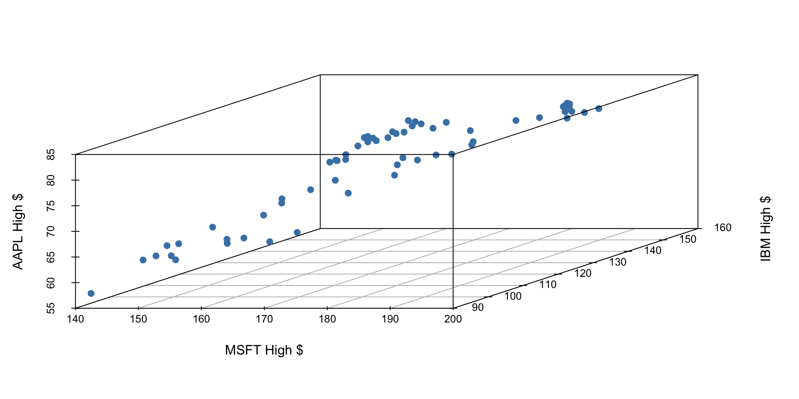
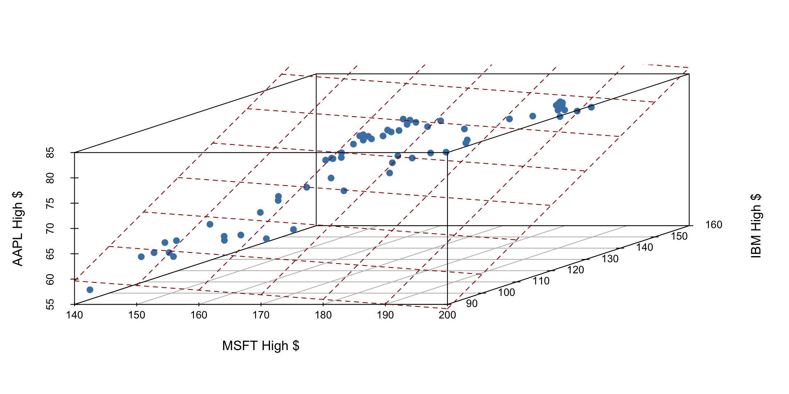

library(tidyverse)
library(tidymodels)
library(scatterplot3d)Regression with multiple predictors
Lecture 7
Warm up
Check-in
- Daily check-ins for getting you thinking at the beginning of the class and reviewing recent/important concepts
- Go to Canvas and open today’s “quiz” titled
2023-09-25 Check-in - Access code:
___(released in class) - “Graded” for completion
Announcements
- Suggested answers for application exercises posted
- My office hours this week:
- Tuesday 4:45-5:45 in Old Chem 213 (instead of the usual 3:30 - 5:30)
- Wednesday 5-6 on Zoom
- Lab 4 is due Thu, Sep 28 at 5 pm on Gradescope
- Lab this week: Exam 1 review
- Exam 1:
- In class - Wed, Oct 4
- Take home - Starts after in-class exam, ends Fri, Oct 6 at 5pm
- No lab on Fri, Oct 6
Load packages and data
\(R^2\) and model fit
\(R^2\)
\(R^2\), aka “the coefficient of determination” or “correlation squared” is a way to see how well a given model fits the data.
\[ R^2 = r_i^2 \]
Sum of squares total, SST
The sum of squares total is a measure of the total variability in the outcome variable:
\[ SST = (y_1 - \bar{y})^2 + (y_2 - \bar{y})^2 + \cdots + (y_n - \bar{y})^2 \]
Sum of squares residuals, SSE
The sum of squares residuals (error) is a measure of the variability in the residuals, i.e., variability left unexplained in the outcome variable after the model is fit:
\[ SSE = (y_1 - \hat{y}_1)^2 + (y_2 - \hat{y}_2)^2 + \cdots + (y_n - \hat{y}_n)^2 \]
\(R^2\), another look
\[ R^2 = \frac{SST - SSE}{SST} = 1 - \frac{SSE}{SST} \]
. . .
- This can be summarized as “\(R^2\) is 1 minus the sum of squared residuals divided by the sum of squared total”.
. . .
- In other words, \(R^2\) is the proportion of variability in the outcome that is explained by the model.
\(R^2\)
If the sum of squared residuals is 0, then the model explains all variability and \(R^2 = 1 - 0 = 1\).
If the sum of squared residuals is the same as all the variability in the data, then model does not explain any variability and \(R^2 = 1 - 1 = 0\).
\(R^2\) is a measure of the proportion of variability the model explains. An \(R^2\) of 0 is a poor fit and \(R^2\) of 1 is a perfect fit.
Finding \(R^2\)
To find \(R^2\) simply call the function glance() on your model_fit, e.g.
model_fit <- linear_reg() |>
fit(outcome ~ predictor, data = data_set)
glance(model_fit)Models with multiple predictors
Two predictors
\[ y = \beta_0 + \beta_1 x_1 + \beta_2 x_2 + \epsilon \]
- \(y\): the outcome variable. Also called the “response” or “dependent variable”. In prediction problems, this is what we are interested in predicting.
- \(x_i\): the \(i^{th}\) predictor. Also commonly referred to as “regressor”, “independent variable”, “covariate”, “feature”, “the data”.
- \(\beta_i\): “constants” or coefficients i.e. fixed numbers. These are population parameters. \(\beta_0\) has another special name, “the intercept”.
- \(\epsilon\): the error. This quantity represents observational error, i.e. the difference between our observation and the true population-level expected value: \(\beta_0 + \beta_1 x\).
- Effectively this model says our data \(y\) is linearly related to the \(x_1\) and \(x_2\) but is not perfectly observed due to unexplained errors.
A simple example
Let’s examine the first quarter of 2020 high prices of Microsoft, IBM, and Apple stocks to illustrate some ideas.

If we have three measurements (variables) then each observation is a point in three-dimensional space. In this example, we can choose one of our measurements to be the outcome variable (e.g. Apple stock price) and use our other two measurements (MSFT and IBM price) as predictors.
In general, the total number of measurements, i.e. variables (columns) in our linear model represents the spatial dimension of our model.
2 predictors + 1 outcome = 3 dimensions
The fitted linear model no longer looks like a line, but instead looks like a plane. It shows our prediction of AAPL price (\(y\)) given both MSFT price (\(x_1\)) and IBM price (\(x_2\)).

Fitting a multiple regression model in R
Find the equation of the plane by adding in new predictors:
my_model_fit <- linear_reg() |>
fit(outcome ~ predictor1 + predictor2 + predictor3 + ..., data = data_frame). . .
- This code template will fit the model according to the ordinary least squares (OLS) objective function, i.e., we are finding the equation of the hyperplane that minimizes the sum of squared residuals
. . .
- You can then display a tidy output of the model with the
tidy()function on your fitted model:tidy(my_model_fit)
Application exercise
Go to Posit Cloud and start the project titled ae-07-Books.
ICYMI
Today’s daily check-in access code: ___ (released in class)